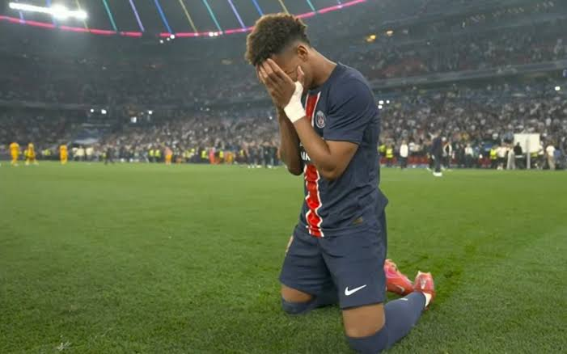
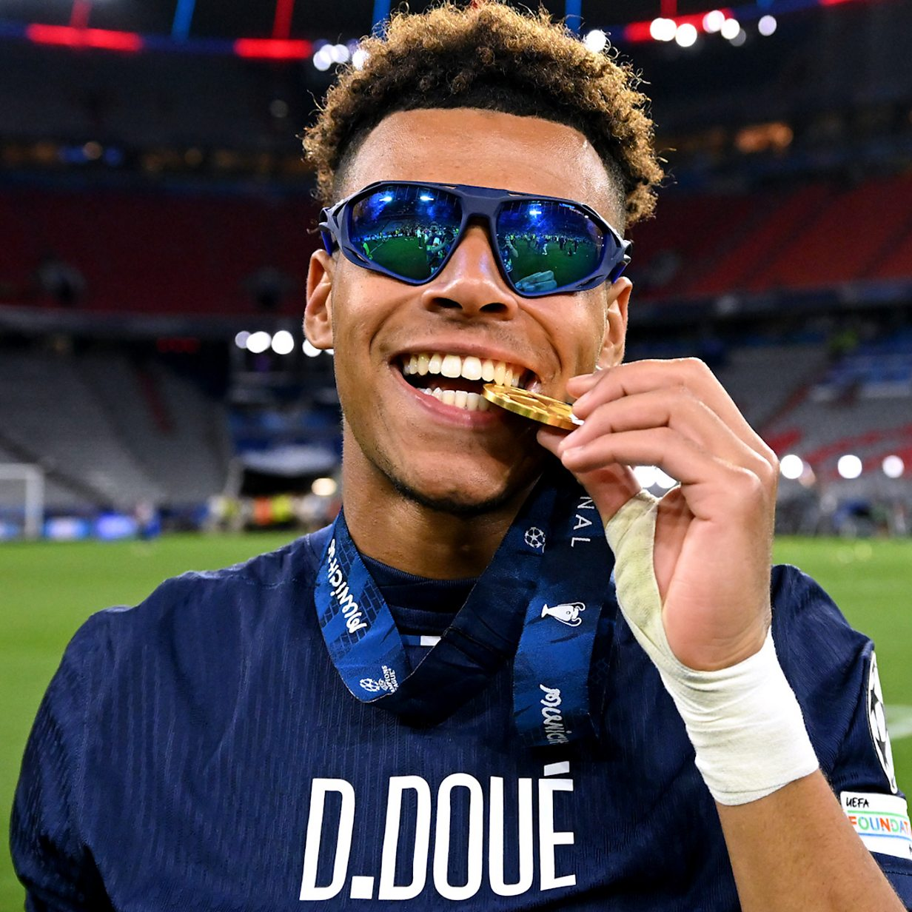

.jpg)
Nesse site vou falar sobre o garoto de 20 anos frances que joga no psg e que ganhou duas champions seguidas uma fazendo 2 gols e 1 assistência
e logo 1 ano depois ganhou outra champions com 20 anos. E também sendo um dos protagonistas do time do psg sendo a primeira temporada no time
com dembele, que foi melhor do mundo kivaratskhelia, vitinha, hakimi, nunu mendes, donnaruma, marquinhos, etc; e Desiré Doué fazendo 15 gols
e ganhou a champions league e na temporada 25/26 também marcou 15 gols de novo sendo protagonista, praticamente com o mesmo time da ultima temporada
só mudou o goleiro e até agora Desiré Doué tem 1 Golden Boy 2025, Jovem Jogador da Época da UEFA Champions League: 2024–25, Jogador Jovem da temporada
da Ligue 1: 2024–25 e 2025–26, Globe Soccer Awards (Jogador Emergente): 2025, Seleção Mundial Juvenil Sub-20 (IFFHS): 2025,Time do Ano da Ligue 1: 2024–25,
Jogador do Mês da Ligue 1: Março de 2025, e tambem melhor jogador jovem do mundial; Prêmios Coletivos,Liga dos Campeões da UEFA (2024–25 e 2025–26): Bicampeão europeu pelo
Paris Saint-Germain, Ligue 1: Campeão francês pelo PSG, Supercopa da França, Copa da França, Supercopa da UEFA, Seleção Francesa (Sub-21 e Seleção Principal): Medalha
de prata nos Jogos Olímpicos de Paris (2024) e Medalha de bronze na UEFA Nations League. E ele é comparado com vários jogadores craques como,lamine yamal, neyma jogador,
etc; E essa é toda a trajetória até o profissional e até ganhar o mundo inteira. O Início e a Base no Rennes (2011–2022)
Nascido em Angers, na França, em 3 de junho de 2005, Désiré Doué cresceu em uma família muito ligada ao esporte (é irmão do também jogador Guéla Doué e primo de Yann Gboho).
Sua jornada no futebol começou cedo: com apenas seis anos, em 2011, ele ingressou nas categorias de base do Stade Rennais, clube francês famoso por lapidar grandes talentos (como Eduardo Camavinga e Ousmane Dembélé). Doué passou mais de uma década subindo os degraus da base do clube, destacando-se pela excelente visão de jogo, capacidade de drible e facilidade para atuar tanto centralizado quanto pelas pontas.
🚀 A Explosão no Profissional do Rennes (2022–2024)
Sua estreia no time principal aconteceu em 2022, quando ele tinha apenas 17 anos. Não demorou para que mostrasse ao que veio.
Temporada 2022–23: Teve seu primeiro ano completo no profissional, somando 34 jogos e 4 gols, chamando a atenção dos olheiros europeus por sua maturidade tática em uma liga física como a Ligue 1.
Temporada 2023–24: Ele se consolidou de vez na equipe da Bretanha. Foram 42 partidas disputadas, com 4 gols e 6 assistências, atuando com maestria pelo lado esquerdo do ataque ou no meio de campo.
Nessa mesma época, ele ajudou a seleção da França Sub-23 a conquistar a Medalha de Prata nas Olimpíadas de Paris 2024.
🗼 A Transferência Milionária para o PSG (2024)
Em agosto de 2024, após uma disputa acirrada no mercado de transferências que envolveu gigantes como o Bayern de Munique e o Chelsea, o Paris Saint-Germain venceu a corrida e assinou com o jovem por um valor estimado em € 50 milhões, com um contrato válido até 2029.
Chegando a Paris com a camisa 14, ele rapidamente se encaixou na filosofia do clube de apostar em jovens talentos franceses.
🏆 Domínio na Europa e Premiações Individuais (2024–2026)
O impacto de Doué no PSG foi imediato e avassalador, fazendo parte de uma das eras mais vitoriosas da história recente do clube parisiense.
Títulos Coletivos: Sob o comando do PSG, Doué conquistou o bicampeonato da Ligue 1 (2024–25 e 2025–26) e duas Supercopas da França (Trophée des Champions). No cenário continental, fez história ao vencer duas vezes consecutivas a UEFA Champions League (nas temporadas 24–25 e 25–26), além da Supercopa da UEFA de 2025.
Reconhecimento Mundial: O ano de 2025 foi o auge do seu reconhecimento individual. Ele faturou o prestigiado prêmio Golden Boy (dado ao melhor jogador jovem do mundo) e o prêmio de Jogador Emergente no Globe Soccer Awards. Foi eleito o Melhor Jogador Jovem da Champions League e do Mundial de Clubes da FIFA.
🇫🇷 Seleção Francesa Principal
Graças ao seu desempenho avassalador, Doué fez a transição natural para a seleção principal da França. Ele se tornou presença constante nas convocações dos Les Bleus, participando ativamente dos jogos preparatórios e carimbando sua vaga como um dos grandes nomes da nova geração francesa para os palcos mundiais.
Com apenas 21 anos, ele já acumula uma galeria de troféus digna de veteranos e é amplamente considerado uma das maiores realidades do futebol atual.


.jpeg)
.jpeg)

.jpg A)